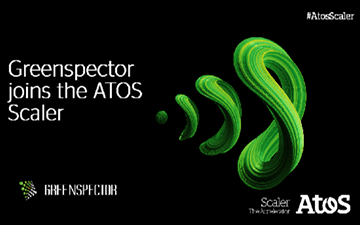

GREENSPECTOR joins the ATOS Scaler to pursue initial collaborations with the ATOS Group. The objective of this partnership is the integration of GREENSPECTOR solutions and expertise within ATOS projects to make the applications developed within the framework of the Group more efficient, inclusive and eco-responsible.
GREENSPECTOR is part of a global group of 14 start-ups when the Scaler Atos was launched on July 7, 2020. Greenspector will aim to participate in the “Decarbonization” of the Group’s activities. Recall that ATOS is the first ESN « Digital Services Company » on a global scale to integrate strong objectives of « 0 Emission – Net » with the announced intermediate objective of halving their emissions within 10 years.
GREENSPECTOR has collaborated on several projects. We can cite in particular the military project AUXYLIUM (SENTINEL operation) a business application for which joint work with ATOS teams has made it possible to divide by more than 3 the energy consumption on board a smartphone.
Thierry LEBOUCQ, Chairman GREENSPECTOR :
« This ATOS Scaler selection allows us to pursue a deeper stage in industrial and commercial terms of our partnership in France but also internationally. It responds to the challenges that the ATOS Group has set itself in terms of impact reduction of digital activities for their customers. We are therefore very proud to be able to make our contribution to this virtuous and necessary objective and to develop our international collaborations with a leading and committed ESN«
This international partnership is part of a context where digital technology is consuming more and more with a global impact estimated at 4% of GHG emissions but which is growing faster than other sectors with the advent of increasingly frequent uses. and expensive, and increasingly new technologies.